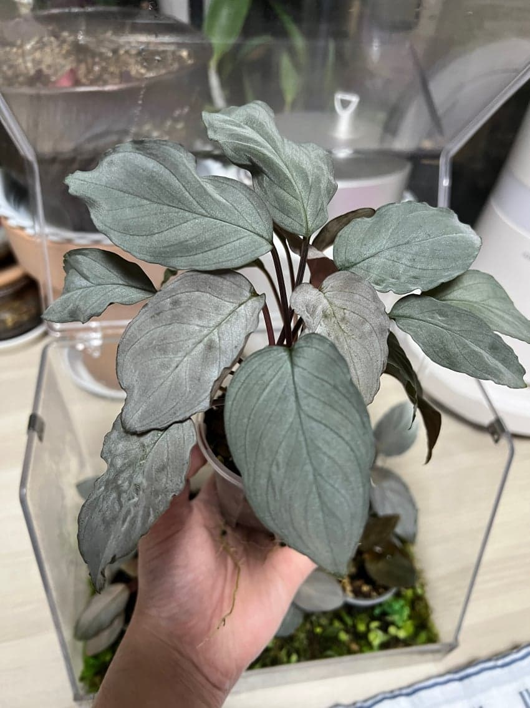
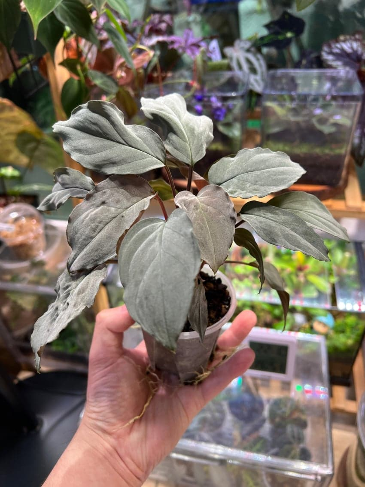
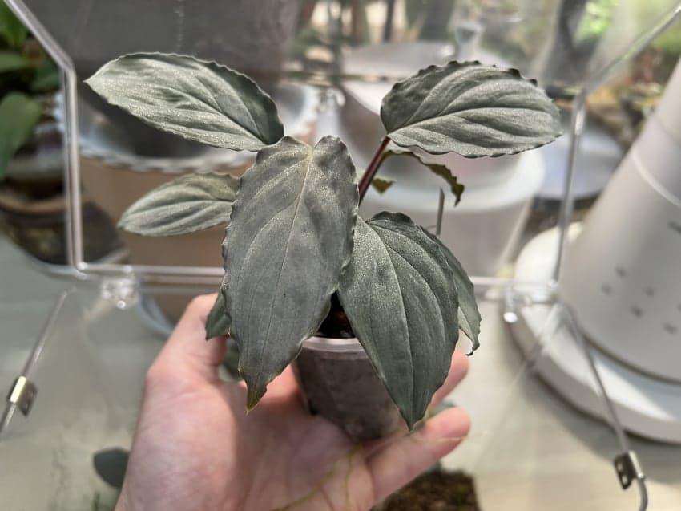
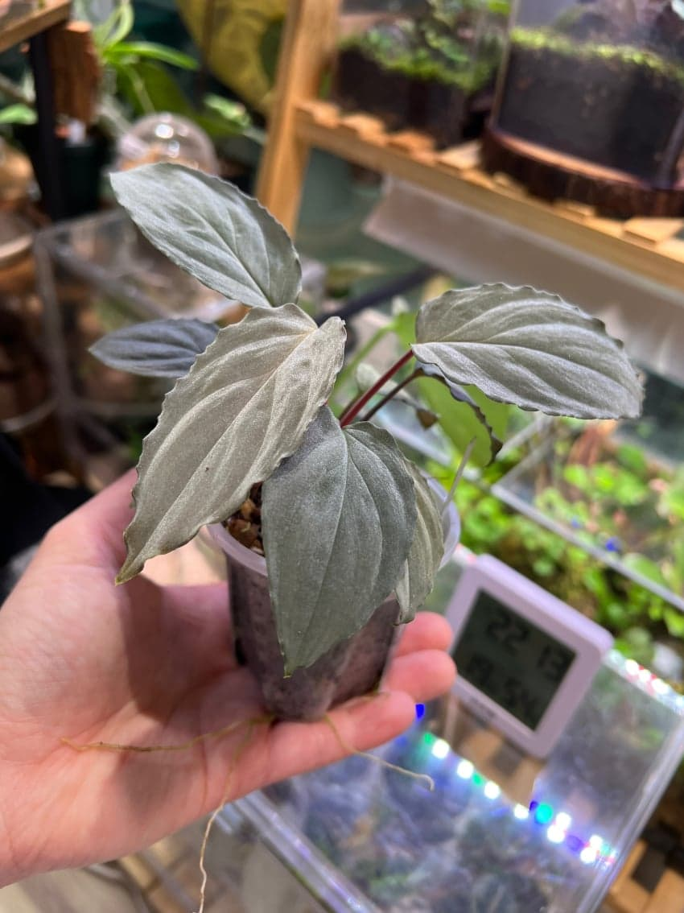
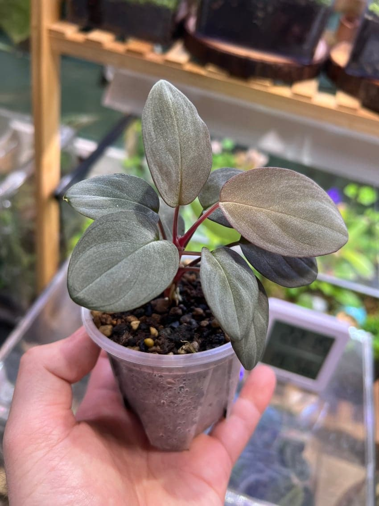
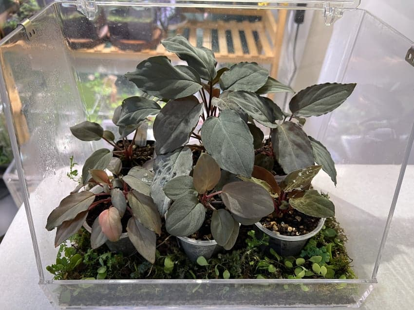

— · 21 · 2026-11-25 10:16:01 · 원문






수집 당시 댓글 21개
사과수원형태아기상어 · 11.24 22:21:20
↳ 답글 · 나낫치 · 11.24 22:25:33
↳ 답글 · 사과수원형태아기상어 · 11.24 22:25:46
순애보키야쿤 · 11.24 22:27:36
↳ 답글 · 나낫치 · 11.24 22:37:14
↳ 답글 · 순애보키야쿤 · 11.24 22:39:41
↳ 답글 · 나낫치 · 11.24 22:43:32
↳ 답글 · 순애보키야쿤 · 11.24 22:43:43
ㅇㅇ · 11.25 10:16:49
↳ 답글 · ㅇㅇ · 11.25 12:44:04
↳ 답글 · 나낫치 · 11.25 17:40:06
봇치쟝 · 11.25 10:18:13
Xrosiam · 11.25 10:18:24
↳ 답글 · 나낫치 · 11.25 17:39:16
ㅇㅇ · 11.25 10:21:39
히이잉 · 11.25 10:43:19
네덕찡 · 11.25 11:21:45
ㅇㅇ · 11.25 14:09:02
사마중달 · 11.25 14:12:02
ㅇㅇ · 11.25 20:27:22
제로워터 · 11.25 20:47:46
댓글
수집 당시 댓글 21개
사과수원형태아기상어 · 11.24 22:21:20
· 나낫치 · 11.24 22:25:33
· 사과수원형태아기상어 · 11.24 22:25:46
순애보키야쿤 · 11.24 22:27:36
· 나낫치 · 11.24 22:37:14
· 순애보키야쿤 · 11.24 22:39:41
· 나낫치 · 11.24 22:43:32
· 순애보키야쿤 · 11.24 22:43:43
ㅇㅇ · 11.25 10:16:49
· ㅇㅇ · 11.25 12:44:04
· 나낫치 · 11.25 17:40:06
봇치쟝 · 11.25 10:18:13
Xrosiam · 11.25 10:18:24
· 나낫치 · 11.25 17:39:16
ㅇㅇ · 11.25 10:21:39
히이잉 · 11.25 10:43:19
네덕찡 · 11.25 11:21:45
ㅇㅇ · 11.25 14:09:02
사마중달 · 11.25 14:12:02
ㅇㅇ · 11.25 20:27:22
제로워터 · 11.25 20:47:46